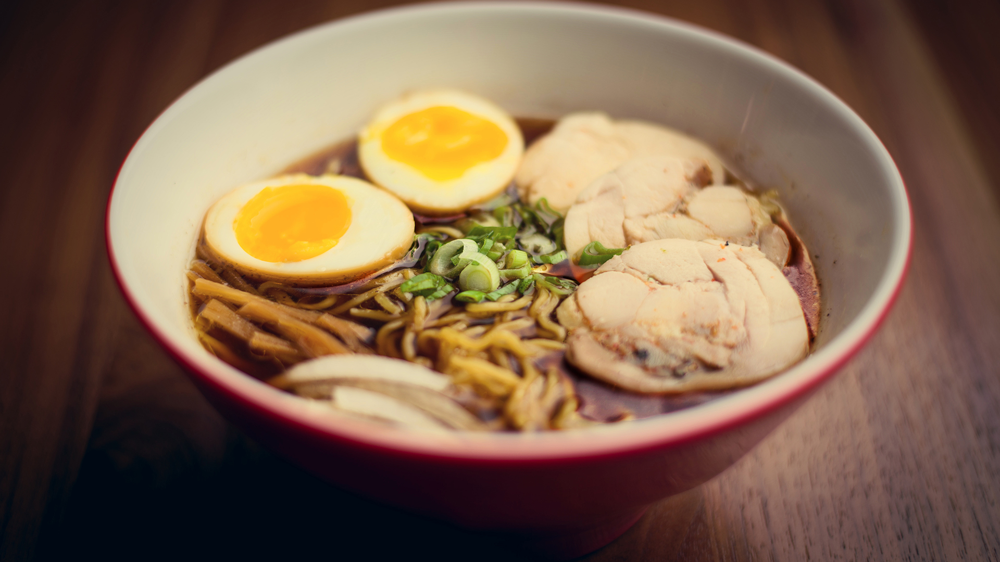

Como hacer Ramen cacero
El ramen es la segunda comida japonesa más reconocida en el mundo después del sushi y a continuación se detallaran sus ingredientes y la manera de preparar el plato
Ingredientes para 4 porciones
- 4 porciones de fideos Ramen (de 125 a 150 g. por ración)
- 500 g. de panceta de cerdo (para el cerdo Chashu)
- 4 huevos (para el y huevo marinado)
- 1 hoja de alga Nori (partida en 4)
- 3 l. de agua
- 3 trozos grandes de jengibre
- 2 tallos de cebolleta
- 1 zanahoria
- 1 cabeza de ajo
- 300 ml. de salsa de soja japonesa
- 150 ml. de Sake
- 150 ml. de Mirin
- 1 trozo de alga Kombu (unos 5 g.)
- 1/2 taza aceite vegetal (unos 120 ml.)
- 1 kg. de huesos de pollo
- 1/2 kg. de huesos de cerdo
Preparación paso a paso
- En una olla poner a remojo un trozo de alga Kombu, salsa de soja japonesa y dejar reposar unos 30 minutos como mínimo, aunque si tenéis tiempo mejor prepararlo la noche anterior.
- Limpiar las impurezas de los huesos: Hervir los huesos de cerdo y pollo en agua caliente para eliminar las impurezas, cuando empiece a salir la espuma dejar cocinar unos 5 minutos más. Retirar del fuego y limpiar muy bien con agua.
- Preparar el caldo: Volver a poner los huesos en la olla, junto con cebolleta, cebolla, zanahoria, ajo, jengibre, setas shiitake deshidratadas y lo cubrir con agua. Cocinar a fuego alto y cuando empiece a hervir bajar a fuego lento y lo dejar cocinar durante 2 horas.
- Preparar la panceta, enrollarla en forma de cilindro con la piel hacia fuera y con hilo de cocina atarla bien para que mantenga su forma. Cocinar junto con el caldo durante 1 hora.
- Preparar el Tare: Poner la olla de alga Kombu y salsa de soja que hemos preparado previamente (paso 1) a fuego muy suave, añadir Sake, Mirin, cebolleta, ajo y jengibre. Cuando empiece a hervir, apagar el fuego y reservar para luego.
- Preparar el huevo marinado: Cocinar el huevo en agua hirviendo durante 6 minutos, el huevo tiene que estar a temperatura ambiente, remover durante el primer minuto para que la yema se mantenga en el centro. Sacar a un bol con agua fría para detener la cocción. Una vez fríos, pelarlos con mucho cuidado. Introducirlos en una bolsa ziploc añadir un poco del Tare que hemos preparado previamente. Cerrar la bolsa y dejar marinar en la nevera durante 2 horas como mínimo.
- Preparar el cerdo Charshu: Tras 1 hora de cocción, sacar la panceta y quitarle el hilo. En una sartén con un poco de aceite vegetal dorar la panceta por todos sus lados. Una vez que esté bien dorada, dejarla reposar unos 5 minutos. Ponerla en una bolsa ziploc y añadir un poco del Tare. Cerrar la bolsa y dejar marinar en la nevera durante 2 horas.
- Preparar aceite aromatizado: Freír la cebolleta en abundante aceite vegetal, cuando esté bien frita y el aceite se haya infusionado, pasar a un bol y reservar para luego.
- Cortar la panceta en rodajas de grosor al gusto y en una sartén, dorarla por ambos lados. Cortar el huevo marinado por la mitad.
- Servir el Ramen: En un bol poner 4 cucharadas de Tare, 1 cucharada de aceite de cebolleta y caldo hasta un poco más de la mitad del bol. Cocinar los fideos en agua hirviendo durante 1 minuto y ponerlos en el bol. Añadir la panceta, la cebolleta, el huevo marinado, un trozo de alga Nori y nuestro Ramen ya está listo para disfrutar.